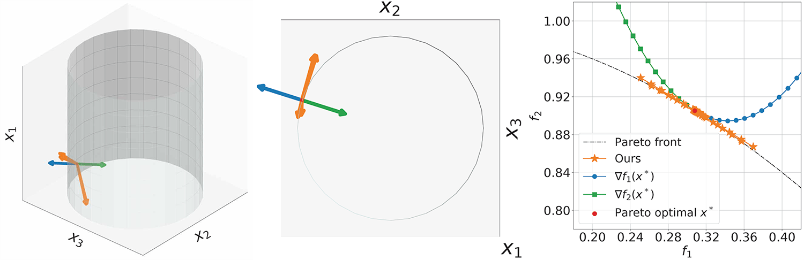
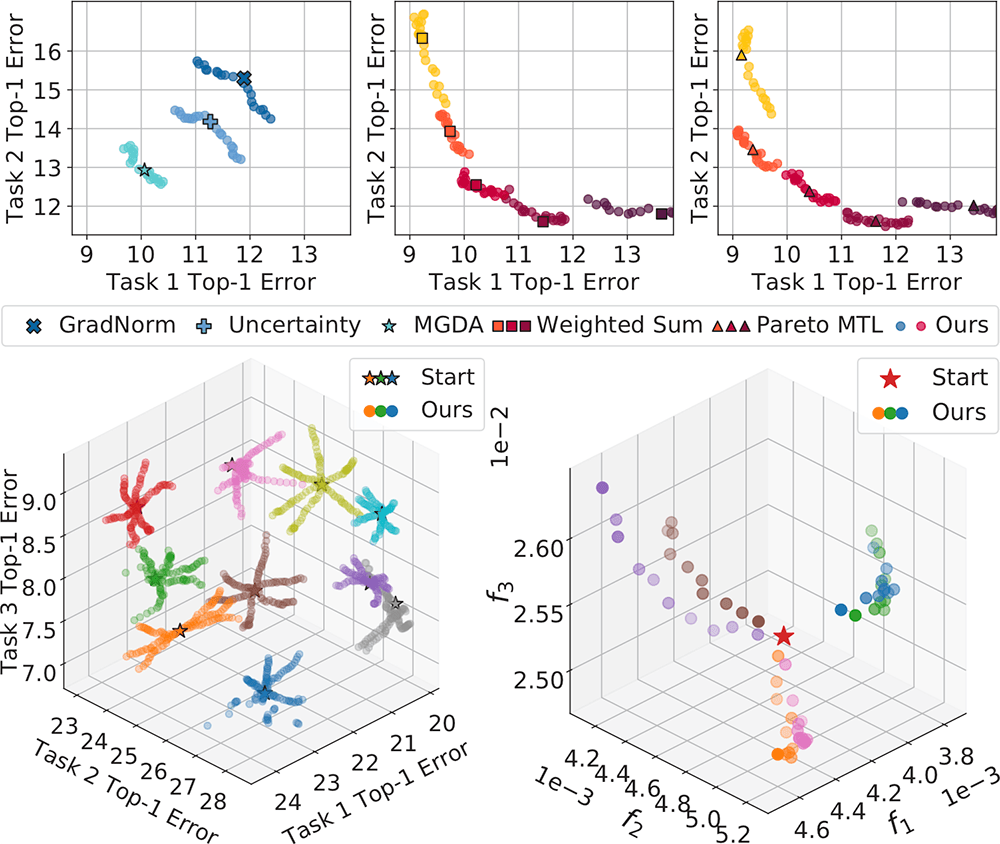
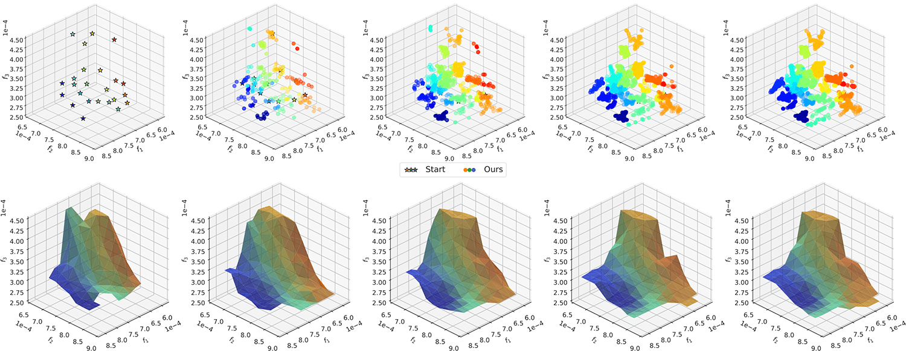

Efficient Continuous Pareto Exploration in Multi-Task Learning
MIT CSAIL

Figure 1.
Comparisons of different exploration directions at a Pareto optimal solution ${\color{Red} \mathbf{x}^*}$.
The analytic Pareto set (the cylindrical surface) of ZDT2-variant, the gradients ${\color{NavyBlue} \nabla f_1(\mathbf{x}^*)}$ and ${\color{OliveGreen} \nabla f_2(\mathbf{x}^*)}$, and our directions ${\color{BurntOrange} \{\mathbf{v}_i\}}$.
A top-down view to show ours are almost tangent to the Pareto set.
Plots of $\mathbf{f}(\mathbf{x}^*+s\mathbf{d})$ where $s\in[-0.1,0.1]$ and $\mathbf{d}$ is ${\color{NavyBlue} \nabla f_1(\mathbf{x}^*)}$, ${\color{OliveGreen} \nabla f_2(\mathbf{x}^*)}$, and our directions ${\color{BurntOrange} \{\mathbf{v}_i\}}$.
The analytic Pareto set (the cylindrical surface) of ZDT2-variant, the gradients ${\color{NavyBlue} \nabla f_1(\mathbf{x}^*)}$ and ${\color{OliveGreen} \nabla f_2(\mathbf{x}^*)}$, and our directions ${\color{BurntOrange} \{\mathbf{v}_i\}}$.
A top-down view to show ours are almost tangent to the Pareto set.
Plots of $\mathbf{f}(\mathbf{x}^*+s\mathbf{d})$ where $s\in[-0.1,0.1]$ and $\mathbf{d}$ is ${\color{NavyBlue} \nabla f_1(\mathbf{x}^*)}$, ${\color{OliveGreen} \nabla f_2(\mathbf{x}^*)}$, and our directions ${\color{BurntOrange} \{\mathbf{v}_i\}}$.
Abstract
Tasks in multi-task learning often correlate, conflict, or even compete with each other.
As a result, a single solution that is optimal for all tasks rarely exists.
Recent papers introduced the concept of Pareto optimality to this field and directly cast multi-task learning as multi-objective optimization problems, but solutions returned by existing methods are typically finite, sparse, and discrete.
We present a novel, efficient method that generates locally continuous Pareto sets and Pareto fronts, which opens up the possibility of continuous analysis of Pareto optimal solutions in machine learning problems.
We scale up theoretical results in multi-objective optimization to modern machine learning problems by proposing a sample-based sparse linear system, for which standard Hessian-free solvers in machine learning can be applied.
We compare our method to the state-of-the-art algorithms and demonstrate its usage of analyzing local Pareto sets on various multi-task classification and regression problems.
The experimental results confirm that our algorithm reveals the primary directions in local Pareto sets for trade-off balancing, finds more solutions with different trade-offs efficiently, and scales well to tasks with millions of parameters.
Paper
Efficient Continuous Pareto Exploration in Multi-Task Learning
International Conference on Machine Learning (ICML), 2020
[Paper]
[Appendix]
[arXiv]
[Code]
[Video]
[Slides]
@inproceedings{ma2020continuous,
title={Efficient Continuous Pareto Exploration in Multi-Task Learning},
author={Ma, Pingchuan and Du, Tao and Matusik, Wojciech},
booktitle={Proceedings of the 37th International Conference on Machine Learning},
year={2020}
}Results

Figure 2.
Pareto Expansion on
MultiMNIST and its variants ,
UCI Census-Income ,
and UTKFace .

Figure 3.
Continuous parametrization on UCI Census-Income.
Related Projects
International Conference on Machine Learning (ICML), 2020
[Project Page]
[Paper]
[Appendix]
[Code]
[Video]